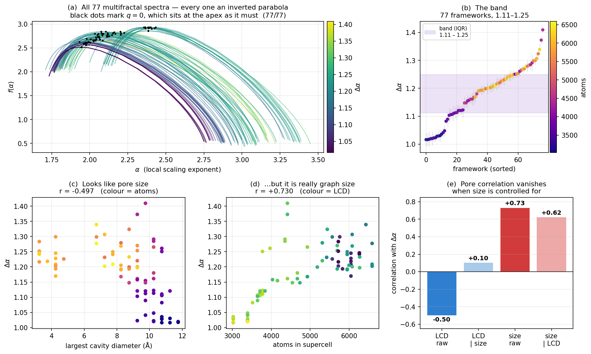
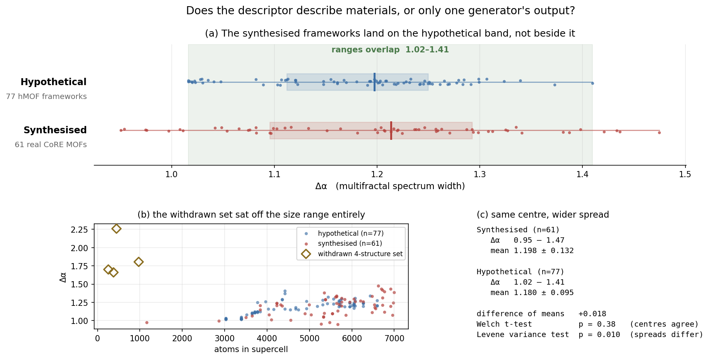
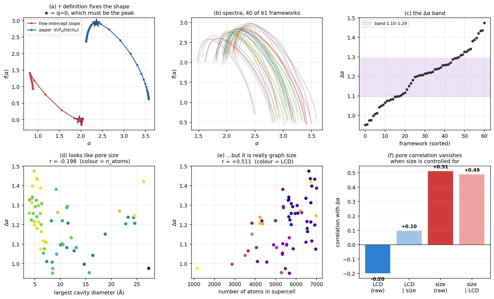

1The Band — 77 Frameworks
- You know
- How one framework becomes three numbers.
- This section
- Runs that calculation over 77 frameworks and looks for structure in the answers — then spends most of its length trying to prove the structure is an artefact.
- Which lets us
- Say what the descriptor establishes, and what it cost us to find out.
hMOF-### — they come from the hypothetical MOF database: computer-generated candidate structures that have never been synthesised. The notebook requested CoREMOF 2019, which is experimental, but the server returned hMOF records and nothing verified it. A check was added so this cannot recur silently.
- Nothing here may be described as “experimental” or “real” — it is a computational screening library.
- Every one of the 77 has a Zn₄O node, so the set is effectively single-metal. It cannot support any claim about behaviour across different metals, including the zirconium question.
- What it is genuinely good for: one node type with many different linkers — a clean same-node, varied-linker family.
A band is the range of spectrum width Δα that a group of frameworks shares, so a new framework can be tested for membership. Scaling this to 77 frameworks exposed an error in how we were computing the spectrum, which is now fixed — and revealed that the band cannot yet be read as a chemical statement. Both are set out here.
The fix — the spectrum now has the right shape
A multifractal spectrum f(α) must be an inverted parabola whose peak sits at q = 0, where f(α0) = D0, the fractal dimension. Ours sloped downhill instead — a mathematics problem, not a materials result. With the corrected τ, all 77 frameworks now peak at q = 0.
The paper defines the mass exponent as a ratio:
Over several radii that is a straight-line fit through the origin — the relation 𝒫q ~ (r/rN)τ carries no prefactor. Our code used np.polyfit(x, y, 1) and took the slope, which is a fit with a free intercept. At q = 0 that difference is fatal:
- at q = 0 every term is
pr_i^0 = 1, so 𝒫0 = |I|, the count of influential nodes; - that count is identical at every radius, so the free-intercept fit sees a flat line;
- a flat line has slope zero, so τ(0) = 0, so f(α0) = 0·α − 0 = 0.
The peak is pinned to zero and the parabola disappears. Measured across the dataset: τ(0) = 0 and f(0) = 0 in all 77 frameworks, and not one of them peaked at q = 0. With the paper's definition ln(r/rN) < 0, so τ(0) = ln|I| / negative < 0 and f(α0) = −τ(0) > 0 — the peak returns.
| τ definition | τ(0) | f(0) | peak at | inverted parabola? |
| free-intercept slope (ours) | 0.0000 | 0.0000 | q = −4 | no |
| paper: ln 𝒫q⁄ln(r⁄rN) | −3.5028 | +3.5028 | q = 0 | yes |
inmfa(..., tau_mode="paper"), now the default. tau_mode="slope" reproduces the old behaviour so the correction can be demonstrated rather than asserted.
What the band does — and does not — mean
All 77 spectra land in a tight band. The question is whether that band is telling us about chemistry. With published pore diameters available, it can be tested directly — and the answer is no, not yet.
The figure the notebook produces, read panel by panel
This is the project’s principal result on hypothetical frameworks, and every later comparison is made against it. It is worth a minute of attention, because four of its five panels exist to attack the finding in the first one.

(b) The band. The same 77 widths, sorted, each with its own uncertainty bar. The shaded strip is where the middle half fall: Δα = 1.11–1.25. Colour is atom count — and it runs dark to light almost in step with the sorted order, which is the clue panel (d) follows up.
(c) The finding that looked exciting. Width against pore diameter, sloping down at r = −0.497. Read alone this says narrow-pored frameworks are more heterogeneous — a publishable-sounding claim.
(d) The finding that was actually there. The same widths against atom count, at r = +0.730 — a stronger relationship than (c). Bigger graph, wider spectrum. That is a property of the calculation, not of the chemistry.
(e) Which of the two survives. Hold graph size constant and the pore correlation collapses from −0.50 to +0.10. Hold pore size constant and the size correlation barely moves, +0.73 to +0.62. The pore-size claim was graph size wearing a disguise.
What this leaves standing
- The method is implemented correctly now. τ(q) matches the paper, the spectrum is a proper inverted parabola, and α0, the asymmetry A and D(q) are meaningful quantities for the first time.
- The band exists as a descriptive range — the interquartile Δα across 77 frameworks. What it does not yet have is a demonstrated physical meaning.
- Δα is not a stability or gas-uptake predictor. The graph is unweighted; it does not know which element an atom is.
- What would make the pore claim testable: compare only frameworks of comparable graph size, or normalise the fit window per structure so Δα stops growing with the graph — then re-test the correlation.
Finding and reporting a confound in your own headline claim is a stronger position than presenting a correlation that does not survive the first check.
Source: mof_band_analysis.ipynb · data band_data.js · plotting band_page.js
2Reproduce Any Number on This Page
Everything here is computed live in your browser by mof_network.js. The Python counterpart produces identical results and can be run directly:
- You know
- The band, and the checks it survived.
- This section
- Gives the exact commands that regenerate every number above from a clean copy of the repository.
- Which lets us
- Verify the results rather than believe them.
→ coordination numbers, centralities and Laplacian spectra for all four structures
3The Same Analysis on Real, Synthesised MOFs
The band above is built from hypothetical frameworks — structures a computer proposed and nobody has ever made. This section runs the identical pipeline on sixty-one frameworks that exist, taken from CoRE MOF 2019, and asks whether the descriptor was describing materials or only one generator’s output.
- You know
- A band, measured on frameworks that only exist inside a computer.
- This section
- Repeats everything on 61 MOFs that have actually been synthesised, and asks whether the band transfers.
- Which lets us
- Decide whether any of this is about materials or only about one structure generator.
hMOF-### entries: chemically plausible, combinatorially
assembled, never synthesised. A band that only holds for one generator’s output is a
statement about that generator, not about matter. The only way to tell the difference is to run
the same code on structures that came out of a laboratory — enough of them to be a
distribution rather than an anecdote.

4_reference/make_real_band_figures.py.
The full real-MOF analysis, panel by panel
This is the exact counterpart of the 77-framework figure on the previous section, recomputed on structures that exist. It is laid out the same way on purpose: the same questions, asked again, of different material. If a result is real it should survive being asked twice.

(b) Forty of the 61 spectra overlaid. All the same family of shape, all overlapping. This is the band, before it is reduced to a number.
(c) The band itself. The 61 widths sorted low to high; the shaded strip is the middle half, 1.10–1.29. Compare it with the hypothetical set’s 1.11–1.25 in the previous section: nearly the same strip, from completely different material.
(d) The tempting correlation, again. Width against largest cavity diameter, r = −0.198. Weaker than the hypothetical set’s −0.497, but the same sign and the same story.
(e) And the real driver, again. Width against atom count, r = +0.511. Larger graphs give wider spectra here too.
(f) The same collapse. Controlling for size drops the pore correlation from −0.20 to +0.10, while size survives at +0.49. The confound that killed our pore-size claim on hypothetical structures behaves identically on real ones. That is the strongest evidence on this site that the confound analysis was correct: it was not a quirk of one dataset.
Generated by
3_notebooks/real_mof_band.ipynb, step 11.
We recorded a prediction before the run. It was wrong.
When this page carried only four synthesised structures, it set out the two readings consistent with the apparent gap and committed, in writing, to what a proper sample would show under each. That text is reproduced below unchanged, because a prediction is only worth something if you are held to it after the data arrives.
Reading 1 — the descriptor is working not supported
“Fifty CoRE MOF structures of matched graph size cluster around Δα ≈ 1.7–2.3, above the hMOF band, and split by metal or by underlying net. That would make the gap a real property of synthesised frameworks and the descriptor genuinely informative.”
Sixty-one arrived at 0.95–1.47, centred on 1.20. Nothing clustered at 1.7–2.3.
Reading 2 — four is not enough this is what happened
“They scatter broadly and overlap the hMOF band, showing that our four archetypes were unrepresentative. We would report that, withdraw the gap the way we withdrew the pore-size claim, and say so on this page.”
That is what this page now does. The gap is withdrawn above, with the reason it appeared.
4Both Bands, Stated Exactly — and What a Band Is Actually For
The word “band” has been used loosely on this page. Here it is pinned down: three different definitions, the numbers for each dataset under each, and an honest account of what such a band can and cannot be used for.
- You know
- That both sets of frameworks produce spectrum widths in the same region.
- This section
- States each band precisely under three definitions, and sets out the four things a band could be used for — marking which are supported.
- Which lets us
- Say what this project delivers to someone who wants to use it, rather than only what it measured.
First: “band” is three different claims
A range can be quoted as the full extent of the data, as the middle half, or as a central interval that discards the tails. They are not interchangeable, and quoting one while implying another is a standard way to overstate a result. All three are given below so the reader can pick.
| Dataset | n | Full range min – max |
Interquartile band the middle half |
Mean ± sd | Median | Mean asymmetry A |
| Hypothetical hMOF — computer-generated |
77 | 1.016 – 1.410 | 1.11 – 1.25 | 1.180 ± 0.095 | 1.197 | −1.31 |
| Synthesised CoRE MOF 2019 — real materials |
61 | 0.951 – 1.475 | 1.10 – 1.29 | 1.198 ± 0.132 | 1.214 | −1.31 |
| Combined | 138 | 0.951 – 1.475 | 1.10 – 1.26 | 1.188 ± 0.113 | 1.203 | −1.31 |
What a band is for — four uses, two of them supported
1. A null range supported
You cannot call a framework “unusually heterogeneous” without knowing what usual is. The band supplies that reference. Before this work there was no published range for Δα over MOFs at all, so any claim about a single structure had nothing to be measured against. This is the least glamorous use and the one the data actually supports.
2. Pipeline quality control supported
A framework landing far outside the band is a flag: either it is genuinely unusual, or — far more often — the CIF was misparsed, the structure is interpenetrated, or the supercell came out disconnected. That is exactly how the 39 rejected structures in this run were caught. A descriptor with a known range is a cheap correctness check on everything upstream of it.
3. Transfer from cheap data to real materials supported, and new
There are hundreds of thousands of hypothetical frameworks and only thousands of synthesised ones. If a rule calibrated on the cheap, plentiful set were invalid on real materials, the plentiful set would be useless for calibration. The two bands coinciding says it is not: you may calibrate on hMOFs and apply to real MOFs, at least for this descriptor. That is the one genuinely new, useful thing on this page.
4. Screening candidates not supported
The aspiration is to triage candidates before spending hours of simulation on them. That requires Δα to correlate with a property someone wants, and nothing here demonstrates that. Worse, the band is wide relative to its centre: the combined interquartile band spans 1.10–1.26 while individual frameworks run 0.95–1.48, so “inside the band” is a weak statement about any single structure. As a filter on its own it would discard little and mean less.
5How Those Sixty-One Frameworks Were Obtained
The route to real structures had to be rebuilt twice: once because the database returned the wrong records, and once because the service stopped returning records at all.
- You know
- That the two bands coincide.
- This section
- Explains where those 61 real structures came from, and the two separate failures that made getting them hard.
- Which lets us
- Judge the provenance of the data, which is the part most easily faked and least often shown.
The bug that made this necessary
The analysis notebook was always written to pull CoRE MOF 2019 — experimentally derived, solvent-removed crystal structures. It asked the MOFX-DB API for exactly that. What came back was hMOF records, and that is why every quantitative result in this project was, for months, computed on hypothetical frameworks.
The cause: on that endpoint the database= parameter is advisory, and when it is combined with a gases[] filter the gas filter wins. The request was correct; the response simply did not honour it. A provenance check further down the notebook caught the discrepancy and printed a warning — which is the only reason we know, rather than having published “experimental” results computed on generated structures.
database field rather than trusting the server —
began returning zero records. A query that returns nothing is at least honest, but it does not
produce a dataset.
10.5281/zenodo.3370236, downloaded by DOI rather than queried.
An archived record is immutable and citable: it is the same bytes for every reader, permanently,
which is a stronger provenance guarantee than any live endpoint can offer. Sampling is capped per
metal composition so that no single metal can dominate the set the way Zn dominated the 77.
The procedure, which ran unchanged
Every module from bond perception onward is written per-CIF and is indifferent to where the CIF came from. Moving from hypothetical to real structures required no change to the analysis — only to the source of the data. That is worth stating plainly, because it is the reason the two sets are comparable at all.